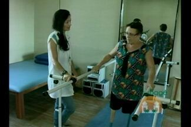
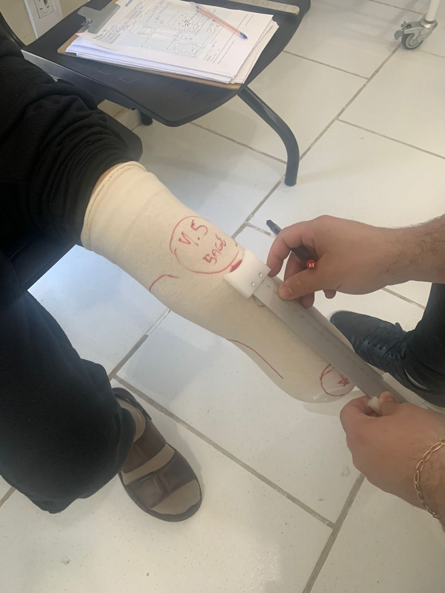

Serviços prestados pelo Serviço de Reabilitação de Bagé
Dentro dos serviços prestados estão:
Tratamento fisioterapêutico:
- Assistência fisioterapêutica cardiovasculas e pneumofuncional;
- Assistência fisioterapêutica nas alterações em neurologia;
- Assistência fisioterapêutica nas disfunções músculo esquelético.

Reportagem da RBS sobre o SRF Bagé
Tratamento fonoaudiológico;
Órteses, Próteses e Meios Auxiliares de Locomoção (OPM's):
- Dispensação de Órteses, Próteses e Meios Auxiliares de Locomoção e ortodopedicas (OPM's);
- Substituição de Órteses, Próteses e Meios Auxiliares de Locomoção e ortodopedicas (OPM's);
- Encaminhamento para a Confecção, manutenção e adaptação de Órteses, Próteses e Meios Auxiliares de Locomoção e ortodopedicas (OPM's).

Medição de órteses e próteses